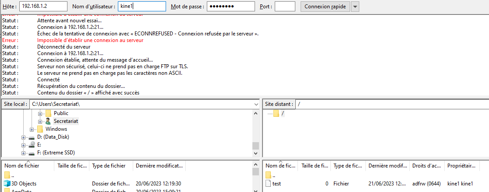
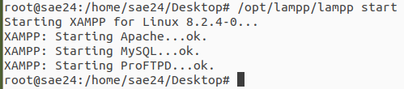

xampp
Nous avons utilisé Xampp pour mettre en place plusieurs servicess.
FTP
Le service FTP est un service de transfert de fichiers. Il permet de transférer des fichiers d'un ordinateur à un autre via un réseau TCP/IP. Pour mettre en place ce service, nous avons utilisé XAMPP et son service ProFTPD.
WEB
Nous avons mis en place un serveur web avec le service Apache. Ce service permet de créer un site web. Nous l'utilisons notamment pour héberger notre site web. De la même manière qu'avec le FTP, nous avons utilisé XAMPP pour mettre en place ce service.
